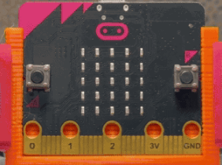

🎹ドレミファソパッド 🎹ドレミファソパッド
このプログラムでは、micro:bitの「かそくどセンサー」を使って、ド レ ミ ファ ソ のカタカナドット絵をLEDでひょうじして学ぶことができます。 このプログラムでは、micro:bitの「加速度センサー」を使って、ド レ ミ ファ ソ のカタカナドット絵をLEDで表示して学ぶことができます。
使い方
- 起動時に「スタート」をカタカナドット絵（ス タ ー ト）でひょうじ 起動時に「スタート」をカタカナドット絵（ス タ ー ト）で表示
- Aボタンを一回おして「ド」のカタカナドット絵を2秒間ひょうじ Aボタンを一回押して「ド」のカタカナドット絵を2秒間表示
- Bボタンを一回おして「レ」のカタカナドット絵を2秒間ひょうじ Bボタンを一回押して「レ」のカタカナドット絵を2秒間表示
- AとBボタンを同時に一回おして「ミ」のカタカナドット絵を2秒間ひょうじ AとBボタンを同時に一回押して「ミ」のカタカナドット絵を2秒間表示
- 本体をたてに動かしたとき「ファ」のカタカナドット絵（フ と ァ）を1秒ずつひょうじ 本体を縦に動かしたとき「ファ」のカタカナドット絵（フ と ァ）を1秒ずつ表示
- 本体をよこに動かしたとき「ソ」のカタカナドット絵を2秒間ひょうじ 本体を横に動かしたとき「ソ」のカタカナドット絵を2秒間表示
- 動きが止まっていて、さいごの音名から1秒たったら「♪」アイコンをひょうじ 動きが止まっていて、最後の音名から1秒経ったら「♪」アイコンを表示

ねらい
- リズムかんやタイミングをみがく リズム感やタイミングを磨く
- 音と光でかくにんする 音と光で確認する
チャレンジ
- スピーカーとつないで音を出せるようにする スピーカーと繋いで音を出せるようにする
- ド レ ミ ファ ソでメロディーをならせるようにプログラムをくふうする ド レ ミ ファ ソでメロディーを鳴らせるようにプログラムを工夫する
🌟光のメトロノーム 🌟光のメトロノーム
このプログラムでは、micro:bitのLEDを使って、光のメトロノームで遊ぶことができます。 このプログラムでは、micro:bitのLEDを使って、光のメトロノームで遊ぶことができます。
使い方
- 起動すると一定のテンポでLEDがてんめつする（おんぷマークをひょうじ → 消灯） 起動すると一定のテンポでLEDが点滅する（音符マークを表示 → 消灯）
- Aボタンでテンポを速く、Bボタンでおそくちょうせい Aボタンでテンポを速く、Bボタンで遅く調整
ねらい
- ちょうかくにたよらないテンポかんを育てる 聴覚に頼らないテンポ感を育てる
- リズム運動や手びょうし、ダンスのれんしゅうに使う リズム運動や手拍子、ダンスの練習に使う
- 音が出せないかんきょうでも使えるツール 音が出せない環境でも使えるツール
チャレンジ
- テンポごとにLEDパターンをかえて、見た目にもちがいを出す テンポごとにLEDパターンを変えて、見た目に違いを出す
- ふくすう人で同じテンポに合わせてみる 複数人で同じテンポに合わせてみる
- 1はく目と2はく目でひょうじする絵文字をかえてみる 1拍目と2拍目で表示する絵文字を変えてみる
💡ライト 💡ライト
このプログラムでは、micro:bitをライトのように使えるようにします。 このプログラムでは、micro:bitをライトのように使えるようにします。
使い方
- Aボタンをおすと、ライトがつく（ディスプレイ全面が光る） Aボタンを押すと、ライトがつく（ディスプレイ全面が光る）
- Bボタンをおすと、ライトが消える Bボタンを押すと、ライトが消える
ねらい
- 電気のオンオフの仕組みを学ぶ 電気のオンオフの仕組みを学ぶ
- 入力と出力のつながりを知る 入力と出力の繋がりを知る
チャレンジ
- ライトのてんめつパターンを作る ライトの点滅パターンを作る
- ライトをふやして、べつべつに動かす ライトを増やして、別々に動かす
🎵音ゲーム 🎵音ゲーム
このプログラムでは、micro:bitを使って、落ちてくるドットに合わせてボタンをおすリズムゲームを行うことができます。 このプログラムでは、micro:bitを使って、落ちてくるドットに合わせてボタンを押すリズムゲームを行うことができます。
使い方
- LEDのドットが上から下へ落ちてくるようすを目で見る LEDのドットが上から下へ落ちてくる様子を目で見る
- 下から二行目のもくひょう線にドットが来たタイミングで、AボタンかABボタンかBボタンをおす 下から二行目の目標線にドットが来たタイミングで、AボタンかABボタンかBボタンを押す
- ドットが左の列に来たらAボタン、真ん中の列に来たらAとBを同時におす、右の列に来たらBボタンをおす ドットが左の列に来たらAボタン、真ん中の列に来たらAとBを同時に押す、右の列に来たらBボタンを押す
- タイミングがぴったりだとにっこりした顔と高い音が出る タイミングがぴったりだとにっこりした顔と高い音が出る
- タイミングが早すぎ、おそすぎ、またはちがうボタンだと、悲しい顔とひくい音が出る タイミングが早すぎ、遅すぎ、または違うボタンだと、悲しい顔と低い音が出る
ねらい
- 目と耳でタイミングをつかんではんしゃの力をきたえる 目と耳でタイミングをつかんで反射の力を鍛える
- ルールにそって正しいボタンをえらぶ思考の力をのばす ルールに沿って正しいボタンを選ぶ思考の力を伸ばす
- プログラムでゲームの仕組みを作る学習 プログラムでゲームの仕組みを作る学習
チャレンジ
- 落ちるスピードをかえてむずかしさを上げてみる 落ちるスピードを変えて難しさを上げてみる
- 音やマークを自分のすきなしるしにかえてオリジナルゲームにする 音やマークを自分の好きな印に変えてオリジナルゲームにする
🔦自動点とうライト 🔦自動点灯ライト
このプログラムでは、micro:bitの光センサーを使って、くらくなったらLEDが自動で点とうするライトを作ります。 このプログラムでは、micro:bitの光センサーを使って、暗くなったらLEDが自動で点灯するライトを作ります。
使い方
- Aボタンで「しきいち」をダウン Aボタンで「しきい値」をダウン
- Bボタンで「しきいち」をアップ Bボタンで「しきい値」をアップ
- 「しきいち」よりくらい時はLEDをすべてオン 「しきい値」より暗い時はLEDをすべてオン
- 「しきいち」より明るい時はLEDをすべてオフ 「しきい値」より明るい時はLEDをすべてオフ
ねらい
- 光センサーの仕組みをりかいする 光センサーの仕組みを理解する
- 「しきいち」による明るさのきりわけをりかいする 「しきい値」による明るさの切り分けを理解する
- にちじょう生活での安全へのいかし方の発見 日常生活での安全への生かし方の発見
チャレンジ
- 自分に合う「しきいち」を決定し、ちょうせいする 自分に合う「しきい値」を決定し、調整する
- LEDの光パターンをくふうする LEDの光パターンを工夫する
- 明るさのきろくとグラフ化 明るさの記録とグラフ化
本情報の内容 (添付文書、リンク先などを含む) は、作成日時点でのものであり、予告なく変更される場合があります。